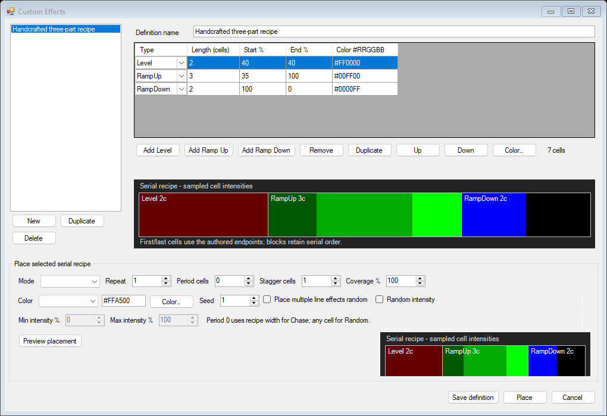
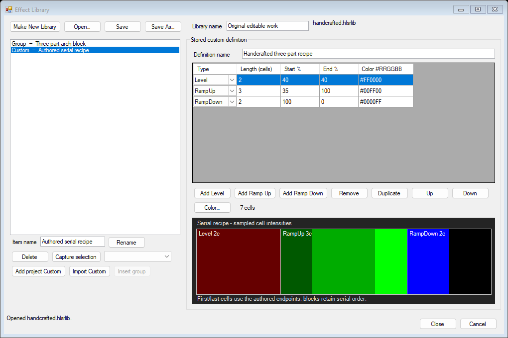

Version 0.3 · October 30, 2026 · Native Windows 7 target
Run HlsStyleSequencer-0.4.exe from the extracted package. Keep its .exe.config and the supplied audio beside it. This is the new executable; an older running copy does not acquire the update. The application remains x86, C# 4 and .NET Framework 4.0, with no browser/Python/Node runtime dependency.
Download executable, source and samples · Instructions · Editable example · Reusable example library · Checks and compatibility evidence
The previous prototype imposed an artificial byte-size cap on project IO. Version 0.3 removes that rejection for opening, saving and recovery; libraries also accept valid data above 16 MB. A regression check saves and reopens a 21,440,940-byte project containing 40,000 effects, and a corresponding large library. XML is streamed with DTDs/external entities disabled and collection/scalar quotas checked before deserialization. Structural model limits and available memory still apply; there is no claim of unlimited project size.
Placement produces ordinary independently editable timeline primitives with fresh IDs. Random values are realized once from the chosen seed and saved with those effects; playback does not rerandomize them. Editing/deleting the recipe affects future placements, not existing work. PixelPlane spatial clips retain their separate painter path.

.hlsrlib file. A library can contain captured effect groups and custom recipes. Stored recipes use the same serial editor; a captured group is revised on the timeline and recaptured.Group insertion requires matching time resolution, enough rows/time and compatible row types. PixelPlane rows require matching dimensions. A mismatch is explained before any partial project change. Library and project saves use atomic replacement and previous-save backups.

The serial, cell-length recipe mechanism and intensity/color controls follow Joe Hinkle’s custom-effect demonstration and the historical HLS manual’s custom/library sections. Those sections describe rectangular capture, group selection/confirmation and an upper-left insertion click. They distinguish editing a definition from modifying placed work channel by channel.
The complete definition-management lifecycle, exact later-version labels, RNG algorithm and native HLS library serialization were not established from an installed version. Create/rename/duplicate/delete, seed persistence and conservative boundary checks are explicit reconstruction choices. There is no generic effect catalog or unverified “Fill” mode. The effect-group row-offset mapping follows the documented rectangle/anchor workflow; exact later-version behavior remains unverified.
Own projects now write schema 3 .hlsr. Earlier schema-2 projects upgrade in memory without rewriting their files, and legacy non-endpoint ramps retain their rendering. Native original HLS projects/libraries and the old browser JSON format remain unsupported.
125 checks pass, including serial timing, endpoint rendering, seeded placement, order/intensity/color modes, independent copies, positional insertion, curves/PixelPlane keys, schema migration, failed-edit rollback, library import Close/Cancel behavior, undo, XML quotas and the real above-16-MB project/library round trip. The executable builds without compiler warnings against the actual .NET Framework 4.0 reference assemblies.
Images are offscreen renders of the actual application controls. Native dropdown text can be absent in hidden-control printing. Actual Windows 7 execution, visible manual interaction on that OS, physical-controller output, optical/audio timing and complete original HLS parity remain unverified. Existing user-owned applications were preserved; no task-owned background service is retained.